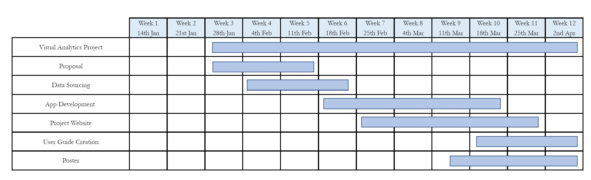

Visual Analytics
Project Background
While millions of people in Singapore use public transport system to satisfy their daily needs, the trips they made provide us with enormous amount of commuters’ data which include information on origin, destination, time, distance and location. We can gain insights on commuters’ behaviours and travelling patterns by analysing these information. However, few research has been done using these data. Appropriate data analysis can support policy analytics where development plans and decisions are made. Therefore, there is a practical and necessary need to interpret these trips’ information and turn the data into statistical results which can reveal the key factors affecting the patterns of commuting flows. In this study, we will focus Singapore bus commuting data and explore the data about the trips at bus stop level and information of bus stops and subzones, then perform proper modelling analysis using Gravity Model and Linear Mixed Model. The ability to analyse commuters’ origins and destinations and when the trips are made will help the government and urban planners to have an integrated view of the flows of people and which factors influence the patterns of commuting most. These insights can provide references when planners design bus routes or make budgets.
Motivation
In Singapore, about 70% of the population travel around the city by bus or rail every day. The public transportation system provides services to commuters’ various routes (Chua & Wang, 2020). The different routes of trips made can indicate the patterns of commuting flow and human activities during various time intervals. The analysis of commuters’ trips can help government and urban planners to gain insights of the distribution of commuters’ flows and activities. These insights will help the government with making political decisions on transportation development plans. The process of gaining insights from public data and making political decisions is part of policy analytics.
The digital age has allowed us to have access to large amounts of data. With EZ-Link cards tapping in and out, we can collect the origin and destination information of commuters. By analysing this information, the government does not make decisions on intuition, but considers the participation of the public and communities (Meinard et al., 2021). This analysis tries to extract useful and appropriate analysis results from messy raw data and figure out the patterns of commuters’ flows.
In this project, we investigate the data on bus commuters’ trips and use models to identify a series of key properties that provide a conceptual view for factors that affect the commuters’ flows. When we analyse the information of trips, the trip’s origin, destination, and time allow us to determine the route of actual journey and deduce the purposes of the trip, such as whether it is made between two subzones or within a single subzone, during morning peak or evening peak, on weekdays or weekend. We show how the factors affecting trips are obtained and how they can be effective in policy analytics applications. The in-depth analysis would clarify the political decisions making process and highlight the key areas that we need to pay attention to.
Objective
Data
The datasets used in this project were provided at LTA Data Mall. For this project, we obtained the passenger commuting data in 3 month, i.e. Oct 2022 to Dec 2022. Each trip’s information describes its original bus stop, destination bus stop, passenger’s entry timestamp (in hour) and whether on weekdays or weekends/holidays. An example of Oct 2022 passenger bus commuting data is as shown.

Moreover, we have 5 other datasets contain the information of each bus stop, each subzone, each planning area, each region of Singapore as well as the distance between each subzone.
In bus stop dataset, we are interested in which subzone it belongs to, and the geo-spatial location(longitude and latitude) of each bus stop.
In subzone dataset, we are interested in subzone area and its land-use description such as residential, commercial, business, and etc, and the geo-spatial location of each subzone.
In distance dataset, we have the distance between each subzone in matrix.
Methodology – Dashboard Design
The dashboard will be split into 5 sections, where the users are recommended to go through the sections sequentially.
R Packages
| R Packages | Brief description | More information |
|---|---|---|
| tidyverse | The tidyverse designed for Data Science. It helps with importing, wrangling, programming and modelling of data | https://www.tidyverse.org/ |
| stplanr | stplanr is a package for sustainable transport planning with R. | https://cran.r-project.org/web/packages/stplanr/vignettes/stplanr-paper.html |
| shiny | Enables interactivity in data and analysis in R | https://shiny.rstudio.com/ |
| ggplot2 | EDA and data visualisation | https://ggplot2.tidyverse.org/reference/ |
| ggridge | To visualise changes in distribution over time and space | https://cran.r-project.org/web/packages/ggridges/vignettes/introduction.html |
| gganimate | Enable animations in graphs | https://cran.r-project.org/web/packages/gganimate/gganimate.pdf |
| plotly | Create interactive plots in R | https://plotly.com/r/ |
| gtsummary | Save regression model in table form | https://www.danieldsjoberg.com/gtsummary/ |
| rgdal | Spatial data handling | https://cran.r-project.org/web/packages/rgdal/rgdal.pdf |
| sf | Encode spatial vector data | https://cran.r-project.org/web/packages/sf/sf.pdf |
| cluster | Cluster analysis in R | https://cran.r-project.org/web/packages/cluster/cluster.pdf |
| ClustGeo | Creates ward-like hierarchical clustering algorithm including spatial/geographical constraints | https://cran.r-project.org/web/packages/ClustGeo/ClustGeo.pdf |
Milestones
